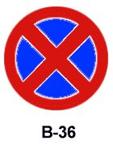
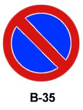

ZATRZYMANIE a POSTÓJ | Wyjaśnia OSK Tailor Gdańsk
Pozytywny wynik egzaminu praktycznego na prawo jazdy kat. B w Gdańsku to marzenie wielu osób, które chcą samodzielnie i bezpiecznie kierować samochodem. Jednak samo opanowanie techniki jazdy to nie wszystko – równie ważne jest zrozumienie przepisów ruchu drogowego w tym znaków drogowych. Dlatego praktyczne zrozumienie znaków drogowych a co ważniejsze dostosowania swojego zachowania do ich znaczenia to nie tylko wynik egzaminu ale przede wszystkim bezpieczeństwo Twoje oraz innych uczestników ruchu drogowego.
W tym artykule instruktorzy OSK Tailor Nauka Jazdy Gdańsk zwracają uwagę na pomyłki kursantów odnośnie rozumienia znaczenia dwóch znaków zakazu ZATRZYMYWANIA oraz zakazu POSTOJU.
ZATRZYMANIE vs. POSTÓJ | wyjaśnia OSK Tailor Gdańsk
Co oznacza zakaz zatrzymywania (znak B-36)?

Oznacza, że:
- nie wolno się zatrzymać,
- nie wolno parkować,
- nie wolno wysadzać pasażerów.
Innymi słowy: auto musi być w ruchu. W efekcie nawet chwilowe zatrzymanie może zakończyć się mandatem.
Co oznacza zakaz postoju (znak B-35)?

Zakaz postoju oznacza, że:
- nie wolno parkować,
- ale wolno się zatrzymać do 1 minuty, np. aby wysadzić pasażera lub załadować bagaż/towar.
🚗 Różnica między zakazem postoju a zakazem zatrzymywania
👉Zwróć uwagę, że (Patrz Art. 46. Prawo o Ruchu Drogowym [PoRD]) ZATRZYMANIE i POSTÓW pojazdu są dozwolone tylko w miejscu i w warunkach, w których jest on z dostatecznej odległości widoczny dla innych kierujących i nie powoduje zagrożenia bezpieczeństwa ruchu drogowego lub jego utrudnienia.
W praktyce oznacza to, że:
🚦Zatrzymanie na czerwonym świetle, w korku lub przed przejściem dla pieszych → to nie jest postój, ponieważ wynika to z przepisów ruchu drogowego.
🚫ZAKAZ POSTOJU pozwala na krótkotrwałe zatrzymanie pojazdu do 1 minuty, np. w celu wysadzenia pasażera.
‼️ ZAKAZ ZATRZYMYWANIA nie pozwala na jakiekolwiek zatrzymanie, nawet na kilka sekund.
📍To właśnie ta różnica jest kluczowa – zarówno na egzaminie, jak i w codziennej jeździe.
Najważniejsze różnice – w skrócie
- Jedna czerwone przekreślenie → zakaz POSTOJU 🚫
- Przekreślenie w postaci dwóch linii X → zakaz ZATRZYMYWANIA
- Zakaz postoju → zatrzymanie dozwolone
- Zakaz zatrzymywania się → zatrzymanie zabronione
Dlatego już jeden szczegół na znaku zmienia wszystko.
| Zdarzenie | ZAKAZ POSTOJU 🚫 | ZAKAZ ZATRZYMANIA |
| Krótkie zatrzymania do 1 min. „na chwilunię / na momencik” | ✅ TAK | ❌ NIE |
| Parkowanie, celowe zatrzymanie samochodu powyżej 1 min. | ❌ NIE | ❌ NIE |
Dlaczego to ważne na egzaminie?
Podczas egzaminu praktycznego w Gdańsku egzaminatorzy mogą sprawdzić Twoją reakcję na te znaki. Co więcej, w centrum miasta i przy głównych arteriach wprowadzono wiele stref z zakazem zatrzymywania się.
Dlatego właśnie w OSK Tailor Nauka Jazdy Gdańsk uczymy:
- rozpoznawania znaków „na pierwszy rzut oka”,
- czytania tabliczek dodatkowych,
- unikania typowych błędów egzaminacyjnych.
📌 Tabliczki pod znakami – uważaj!
Oba znaki mogą mieć dodatkowe tabliczki, które:
- ograniczają zakaz do określonych godzin
- wskazują dni tygodnia
- określają stronę ulicy lub odcinek drogi
👉 Zawsze czytaj znaki w całości, nie tylko symbol.
❗ Najczęstszy błąd kierowców
„Przecież tylko na chwilę się zatrzymałem!”
Takie „stwierdzenie” nie działa przy znaku zakazu zatrzymywania się. Nawet krótki postój może skończyć się mandatem.
🧠 Podsumowanie
Dlatego właśnie, znajomość tych dwóch znaków to nie tylko nie tylko kwestia mandatu i punktów karnych. To co jest ważniejsze to przede wszystkim BEZPIECZEŃSTWO Twoje oraz innych uczestników ruchu.
- ZAKAZ POSTOJU –> możesz się zatrzymać, ale nie parkować.
- ZAKAZ ZATRZYMYWANIA –> nie wolno nawet na chwilę / „nawet na sekundę”.
- Różnica jednego czerwonego paska = duża różnica w przepisach.
skontaktuj się z OSK Tailor Nauka Jazdy Gdańsk
Zaplanuj wizytę
FAQ – pytania kursantów OSK Tailor
FAQ – Znaki drogowe, które oblewają egzamin
Czy przy zakazie postoju można się zatrzymać?
Tak, zakaz postoju (B-35) pozwala na krótkotrwałe zatrzymanie pojazdu, np. w celu wysadzenia pasażera lub załadowania bagażu.
Czy przy zakazie zatrzymywania się wolno wysadzić pasażera?
Nie, zakaz zatrzymywania się (B-36) nie pozwala na jakiekolwiek zatrzymanie pojazdu, nawet na kilka sekund.
Jaka jest różnica między zakazem postoju a zakazem zatrzymywania się?
Zakaz postoju pozwala na krótkie zatrzymanie pojazdu, natomiast zakaz zatrzymywania się całkowicie je zabrania.
Czy złamanie zakazu zatrzymywania się grozi mandatem?
Tak, najczęściej grozi mandatem, punktami karnymi, a w niektórych przypadkach także odholowaniem pojazdu.
Czy mogę zatrzymać się z powodu awarii pojazdu?
Tak, zatrzymanie pojazdu z powodu awarii jest dozwolone niezależnie od znaku drogowego.
Podstawa prawna opracowania
- Prawo o ruchu drogowym – z późniejszymi zmianami. Dz. U. 1997 Nr 98 poz. 602. USTAWA z dnia 20 czerwca 1997 r.
- OBWIESZCZENIE MINISTRA INFRASTRUKTURY ORAZ MINISTRA SPRAW WEWNĘTRZNYCH I ADMINISTRACJI z dnia 31 października 2019 r.w sprawie ogłoszenia jednolitego tekstu rozporządzenia Ministrów Infrastruktury oraz Spraw Wewnętrznych i Administracji w sprawie znaków i sygnałów drogowych. Warszawa, dnia 26 listopada 2019 r. Poz. 2310